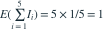

将 5 封不同信随机放入 5 个各对应一封信的信封，每封信恰入一个信封。放对信封的信件数的期望是多少？
- A

- B

- C

- D

我已思考，展开答案与解析
正确答案：B
- 令 表示第 封信放对，则 。

，不需要各指示变量独立。
易错提醒期望的可加性不要求独立。
数学三·概率统计基础专题 · 数学三概率统计基础专题·原创第22题
按数学三常见概率统计知识点原创；不是历年真题或教材原题。

，不需要各指示变量独立。数学三·概率统计基础专题 · 数学三概率统计基础专题·原创第22题
按数学三常见概率统计知识点原创；不是历年真题或教材原题。